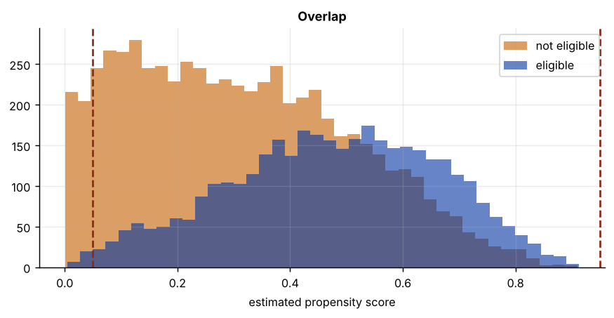

Step 1The question and the model
Does eligibility for a 401(k) pension plan raise households' net financial assets? In the early 1990s, eligibility was determined by the employer, not chosen by the worker. Poterba, Venti and Wise (1994, 1995) argued that, once income and other characteristics are held fixed, eligibility is as good as randomly assigned: people did not choose their job because of its pension plan. This is the classic application of DML (Chernozhukov et al. 2018).
The treatment \(D\) (eligible or not) is binary, and its effect may differ across households. The interactive regression model (IRM) allows that:
and targets the average treatment effect \(\theta = E[g_0(1, X) - g_0(0, X)]\). DML estimates it with the doubly robust (AIPW) score, averaged over cross-fitted predictions:
The first two terms compare predicted outcomes with and without treatment; the last two correct the prediction errors, weighted by the inverse propensity score.
| Variable | Definition |
|---|---|
net_tfa |
Net total financial assets, dollars (outcome) |
e401 |
1 if eligible for a 401(k) (treatment) |
age, age_sq |
Age and its square |
inc, inc_sq |
Income and its square |
educ, educ_sq |
Years of schooling and its square |
fsize, marr, twoearn |
Family size; married; two earners |
db, pira, hown |
Defined-benefit pension; IRA; home owner |
Step 2Load the data and confirm the starting point
import numpy as np
import pandas as pd
import statsmodels.api as sm
df = pd.read_csv("k401_irm.csv")
y, d = "net_tfa", "e401"
X = [c for c in df.columns if c not in (y, d)]
print(f"N = {len(df)} households, {len(X)} controls; {df[d].mean():.1%} eligible")
print(df.groupby(d)[[y, "inc", "age", "educ"]].mean().round(1))
raw = df.loc[df[d] == 1, y].mean() - df.loc[df[d] == 0, y].mean()
ols = sm.OLS(df[y], sm.add_constant(df[[d] + X])).fit(cov_type="HC1")
print(f"\nraw difference in means: {raw:,.0f}")
print(f"OLS with controls: {ols.params[d]:,.0f} (s.e. {ols.bse[d]:,.0f})")N = 9915 households, 12 controls; 37.1% eligible
net_tfa inc age educ
e401
0.0 10788.0 31493.6 40.8 12.9
1.0 30347.4 46861.7 41.5 13.8
raw difference in means: 19,559
OLS with controls: 9,396 (s.e. 1,314)Eligible households hold far more financial assets, but they also earn more: the raw difference mixes the effect of eligibility with the effect of income. Adjusting for the controls cuts the difference roughly in half. With 12 controls (Rule B2: at least 10), DML is the method; with a binary treatment, the interactive model (Rule B3).
Step 3Propensity scores and overlap
The AIPW score divides by \(\hat m(X)\) and \(1 - \hat m(X)\). If some households are almost certain to be eligible, or almost certain not to be, those weights explode and the estimate becomes unstable. Before estimating anything, check overlap: the propensity scores of treated and untreated households should cover the same range, away from 0 and 1.
from sklearn.model_selection import cross_val_predict
from sklearn.ensemble import RandomForestClassifier
import matplotlib.pyplot as plt
ps = cross_val_predict(RandomForestClassifier(n_estimators=300, min_samples_leaf=10, max_features=.5, random_state=0, n_jobs=-1),
df[X], df[d], cv=5, method="predict_proba")[:, 1]
out = (ps < .05) | (ps > .95)
print(f"propensity scores from {ps.min():.3f} to {ps.max():.3f}; {out.mean():.1%} outside [0.05, 0.95]")
print(pd.crosstab(pd.cut(ps, [0, .05, .1, .3, .5, .7, .9, .95, 1]), df[d].map({0: 'not eligible', 1: 'eligible'})))
fig, ax = plt.subplots()
ax.hist(ps[df[d] == 0], bins=40, alpha=.6, label="not eligible", color="#c46000")
ax.hist(ps[df[d] == 1], bins=40, alpha=.6, label="eligible", color="#0033a0")
for v in (.05, .95): ax.axvline(v, ls="--", color="#8a2a17")
ax.set_xlabel("estimated propensity score"); ax.set_title("Overlap"); ax.legend()propensity scores from 0.000 to 0.913; 4.8% outside [0.05, 0.95] e401 eligible not eligible row_0 (0.0, 0.05] 27 451 (0.05, 0.1] 62 570 (0.1, 0.3] 602 2167 (0.3, 0.5] 1246 1848 (0.5, 0.7] 1305 1009 (0.7, 0.9] 438 187 (0.9, 0.95] 2 1

Overlap is reasonable in the middle of the distribution, but 4.8 % of households, almost all of them not eligible (451 of the 478 below 0.05), have propensity scores outside [0.05, 0.95]: households whose characteristics almost never come with a 401(k) offer. DoubleML trims extreme scores at a threshold; the guide reports the estimate at several thresholds in Step 5.
Step 4Double machine learning with DoubleML
The interactive model needs three predictions: the outcome for treated households \(\hat g(1, X)\), for untreated households \(\hat g(0, X)\) (both from ml_g), and the propensity score \(\hat m(X)\) (from the classifier ml_m). Each is cross-fitted.
import doubleml as dml
from sklearn.pipeline import make_pipeline
from sklearn.preprocessing import StandardScaler
from sklearn.linear_model import LassoCV, LogisticRegressionCV
from sklearn.ensemble import RandomForestRegressor
data = dml.DoubleMLData(df, y_col=y, d_cols=d, x_cols=X)
learners = {"LASSO": (make_pipeline(StandardScaler(), LassoCV(cv=5, random_state=0, max_iter=20000)),
make_pipeline(StandardScaler(), LogisticRegressionCV(cv=5, penalty="l1", solver="liblinear", Cs=10))),
"random forest": (RandomForestRegressor(n_estimators=300, min_samples_leaf=10, max_features=.5, random_state=0, n_jobs=-1),
RandomForestClassifier(n_estimators=300, min_samples_leaf=10, max_features=.5, random_state=0, n_jobs=-1))}
fits = {}
for name, (g, m) in learners.items():
np.random.seed(0)
fits[name] = dml.DoubleMLIRM(data, ml_g=g, ml_m=m, n_folds=5, n_rep=3, trimming_threshold=.01).fit()
s = fits[name].summary
print(f"ATE, {name:13s}: {fits[name].coef[0]:9,.0f} s.e. {fits[name].se[0]:7,.0f} 95% CI [{s['2.5 %'].iloc[0]:,.0f}, {s['97.5 %'].iloc[0]:,.0f}]")ATE, LASSO : 8,316 s.e. 1,161 95% CI [5,989, 10,592] ATE, random forest: 7,896 s.e. 1,222 95% CI [5,502, 10,291]
Step 5Compare the estimates
rows = {"raw difference": (raw, np.nan), "OLS with controls": (ols.params[d], ols.bse[d])}
rows.update({f"DML interactive, {k}": (f.coef[0], f.se[0]) for k, f in fits.items()})
tab = pd.DataFrame(rows, index=["effect", "s.e."]).T.round(0)
print(tab)
gap = abs(fits["LASSO"].coef[0] - fits["random forest"].coef[0]) / max(f.se[0] for f in fits.values())
print(f"\nLASSO and forest learners differ by {gap:.2f} standard errors")effect s.e. raw difference 19559.0 NaN OLS with controls 9396.0 1314.0 DML interactive, LASSO 8316.0 1161.0 DML interactive, random forest 7896.0 1222.0 LASSO and forest learners differ by 0.34 standard errors
Both learners give an average effect of eligibility of about 8,000 dollars (8,316 with LASSO, 7,896 with random forests), close to the published DML estimates for these data, below the OLS estimate of 9,396 and less than half the raw difference. The two learners differ by a third of a standard error (Rule B4), so the result does not hinge on the choice of machine-learning method.
Step 6Robustness: trimming and the effect on the treated
Two checks belong in the paper. First, how much do the extreme propensity scores matter? Second, the average effect on the treated (ATTE), the effect for households that actually were eligible, may differ from the ATE.
g, m = learners["random forest"]
rob = {}
for thr in (.01, .05, .1):
np.random.seed(0)
f = dml.DoubleMLIRM(data, ml_g=g, ml_m=m, n_folds=5, n_rep=1, trimming_threshold=thr).fit()
rob[f"ATE, trimming at {thr}"] = (f.coef[0], f.se[0])
np.random.seed(0)
f = dml.DoubleMLIRM(data, ml_g=g, ml_m=m, n_folds=5, n_rep=1, score="ATTE").fit()
rob["ATTE (eligible households)"] = (f.coef[0], f.se[0])
print(pd.DataFrame(rob, index=["effect", "s.e."]).T.round(0))effect s.e. ATE, trimming at 0.01 7632.0 1227.0 ATE, trimming at 0.05 7709.0 1218.0 ATE, trimming at 0.1 7727.0 1211.0 ATTE (eligible households) 10860.0 1709.0
Step 7Write it up
How to write it: method and results
We estimate the average effect of 401(k) eligibility on net financial assets with the interactive regression model of Chernozhukov et al. (2018), assuming, following Poterba, Venti and Wise, that eligibility is as good as random conditional on income, age, education, family structure and other pension and asset holdings (twelve controls including squares). The outcome regressions and the propensity score are estimated with LASSO and, alternatively, random forests, with five-fold cross-fitting repeated three times and propensity scores trimmed at 0.01. Eligibility raises net financial assets by about 8,000 dollars on average (8,316 with LASSO and 7,896 with random forests; standard errors about 1,200), less than the OLS estimate of 9,396 and far less than the raw difference of 19,559 (Table X). The estimate barely moves when propensity scores are trimmed at 0.05 or 0.10 (7,709 and 7,727). The effect on eligible households is larger, about 10,900 dollars (ATTE), consistent with larger gains for the higher-income households who are more often eligible.
Checklist for the paper
- Argue why treatment is as good as random given the controls.
- Show the propensity-score distribution and the share outside [0.05, 0.95].
- Report the learners, folds, repetitions and the trimming threshold.
- Show DML with two learners next to OLS and the raw difference.
- Report the ATTE and the estimate at other trimming thresholds.